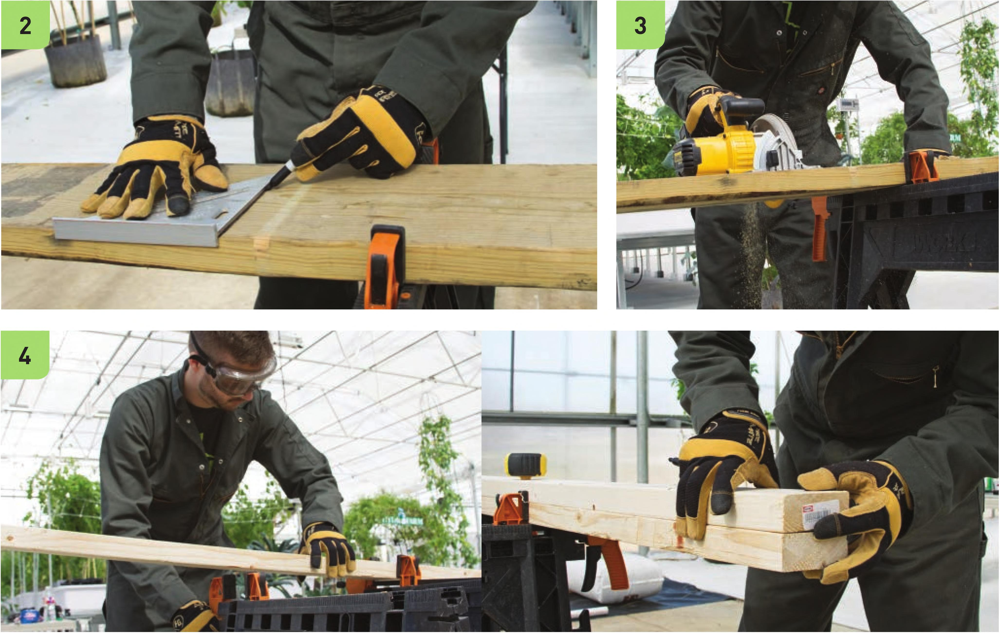

Build the Frame Choose a reservoir before building the frame. The width of the frame needs to be wider than the reservoir so the reservoir can easily fit between the vertical supports. 1 Move the 2 x 10" x 8' board onto the sawhorses and fasten with clamps. Measure and mark two 30" segments to be used as the base of the frame. 2 Draw square cutting lines for each segment of the 2x10. 3 Wearing work gloves and eye protection, cut the 2 x 10" x 8‘ board into two 30" segments with the circular saw. 4 Move the two 2 x 4" x 8' boards onto the sawhorses and fasten with clamps. 122 DIY HYDROPONIC GARDENS Id
